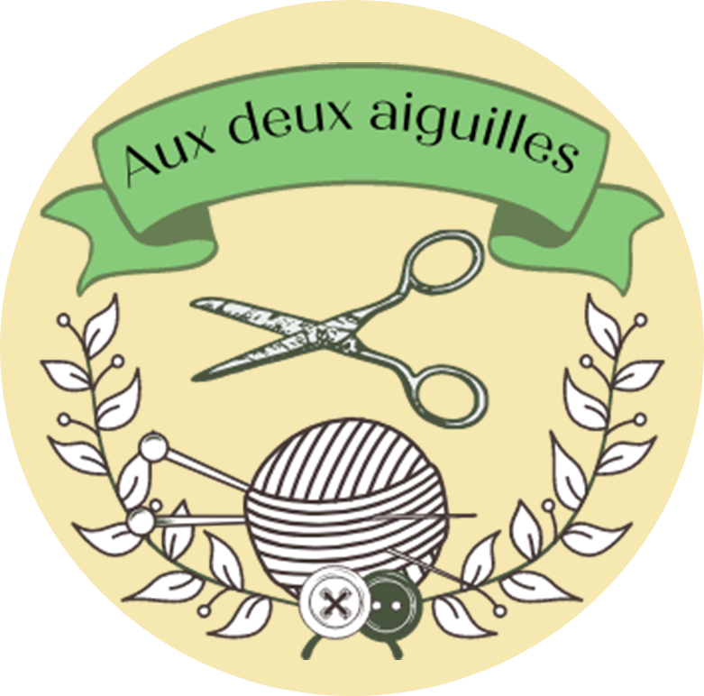
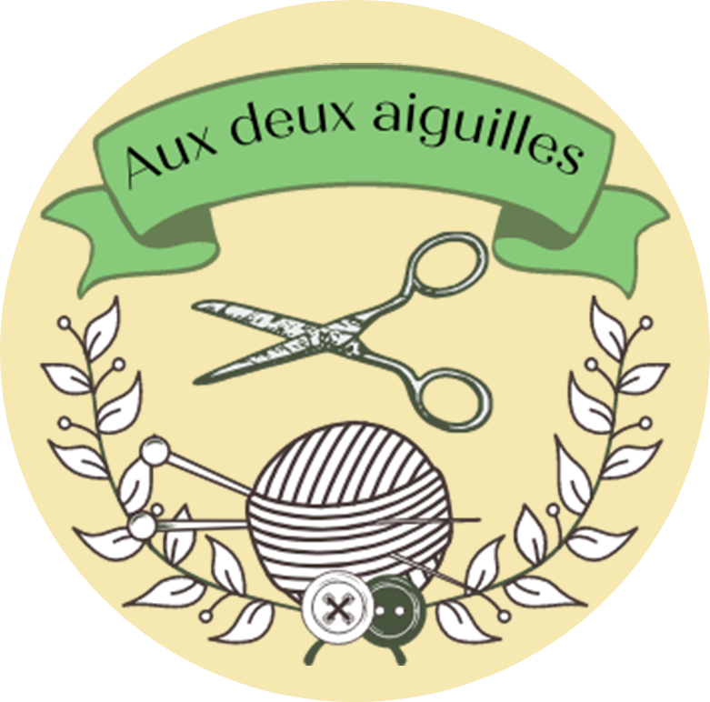
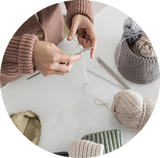
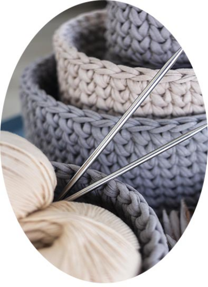
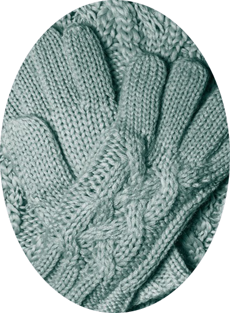
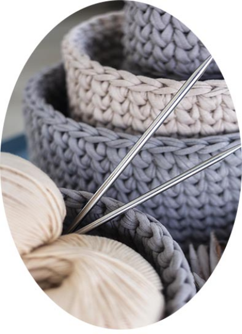
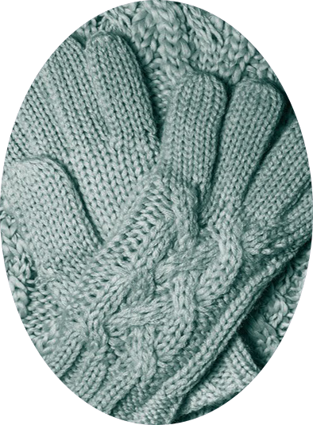

Bonjour à toutes et à tous !
Vous souhaitez apprendre à tricoter mais n'osez pas vous lancer ?
Vous voudiez connaître d'autres points, d'autres techniques ?
Vous avez des restes de laine qui vous embarrasse ?
Ce site est fait pour vous !


Dans ma famille, nous sommes créatives de mère en fille. J’appris coudre à 5 ans et à tricoter à 8 ans. Depuis je me suis mise au crochet, à la broderie, aux fourches, à la tapisserie et bien d’autre choses encore. Parmi toutes ces activités, j’ai choisi de vous parler de tricot.
Sur ce site, j’ai choisi de vous faire partager mon goût pour la création.
Des astuces pour...
Faire un noeud


Monter des mailles

Ainsi que pleins d'autres techniques à découvrir sur ma chaine Youtube !
Des produits artisanaux
 



inscrivez-vous à la newsletter : aux deux aiguilles
Adresse Email :
votre adresse mail
s'inscrire

Livraison
Livraison gratuite à partir de 15€
La livraison s’effectue via Colissimo. Les délais de livraison sont de 2 à 4 jours ouvrés.

Qualité garantie
Textiles Bio
Le Mérino et le coton utilisés par le site Astuce Tricozt sont biologiques.
Paiement
Par Paypal, stripe ou Carte Bancaire
Les solutions de paiement utilisés par mon site sont reconnues et sécurisées.